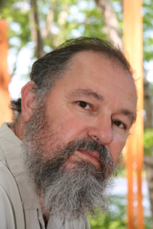

With a nod to Art History, an eye for the aesthetic and attention to craftsmanship, I strive to create art that is smart, edgy and often humorous. I have never quite understood why a picture, which is said to be worth a thousand words, so often needs another thousand words to explain it. So you won't find an essay accompanying my pieces. However, if my work is too easy to understand, then I have set the bar too low.
I approach each art piece like an adventure. I pursue pieces that tell a good story rather than confining myself to a particular style. I thrive when my vision requires that I develop new methods or tools to reach my goal. I've made my own forges, kilns and foundries to fit the needs of a specific piece. I am fascinated by materials and intrigued by their intrinsic qualities and limitations. I like the challenge of thinking outside the box and my intention is to ask the viewer to look at something differently too.
The Adirondack Park has been a god-send for me. The open space and rugged beauty is a kind of "hands-on" inspiration. The rocks and trees are raw sculpture materials and the scenic views are picture perfect. The mountains are a part of my work in every sense.
{kind=link}